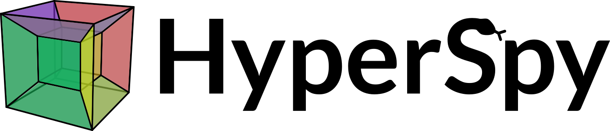
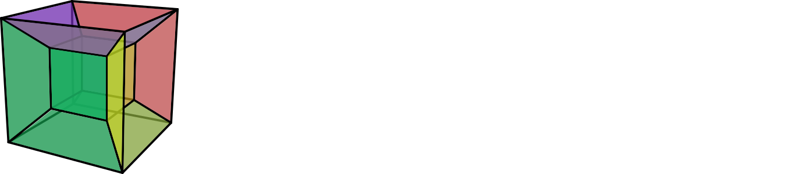
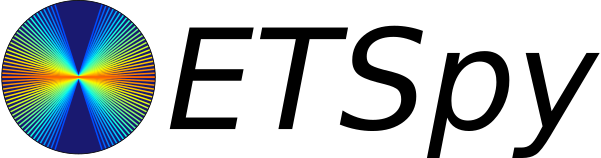
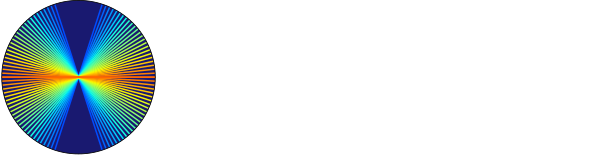
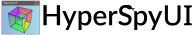

{kind=link}
Open source Python framework for exploring, visualizing and analyzing multi-dimensional data
Visualization
Interactive visualization tools for multi-dimensional spectra and images.
Analysis
Easy access to analytical tools that exploit the multi-dimensionality of datasets, including curve fitting and blind source separation.
Named and Scaled Axes
Two families of axes: signal and navigation with powerful numpy-style indexing mechanism and support for non-uniform axes.
Performance
Built on top of NumPy, SciPy, Numba, Matplotlib, Dask and Scikit-learn for high performance and stability.
Ecosystem
Domain-specific libraries and modular design for easy extensibility.
Community Driven
Developed and maintained by scientists for scientists.
Latest News
HyperSpy Ecosystem
|   | Generic multi-dimensional data analysis toolbox |
|
Reading and writing scientific data formats |
||
X-rays Energy Dispersive Spectroscopy (EDS) and Electron Energy Loss Spectroscopy (EELS) data analysis |
||
4D-STEM (electron diffraction data) analysis |
||
Electron backscatter diffraction (EBSD) data analysis |
||
|  | Luminescence spectroscopy data analysis (cathodoluminescence, photoluminescence, Raman, …) |
|
Analysis of atomic resolution scanning transmission electron microscopy images |
||

|
Off-axis electron holography data analysis |
|
Segmentation and analysis of nanoparticles from electron microscopy data |
||
|   | Processing, alignment, and reconstruction of electron tomography data |
|
|  | Streamlined user interface to HyperSpy |
Support
Tutorials
Tutorials in the form of jupyter notebooks to demonstrate typical analysis workflows are hosted in dedicated repositories for each library, see e.g. HyperSpy demos.
Workshops
Attend one of the HyperSpy workshops organised regularly. Past and future events can be found under News.
Chat
Ask the HyperSpy Community on the Gitter chat.
Cite
If you use HyperSpy and its extensions, please cite it in your publications. Our software is made by scientists who generously donate their time and attention. Citations help us justify the effort that goes into building and maintaining this project. Each of our libraries obtains DOIs from zenodo that can be found in the respective documentations. DOIs for specific versions of HyperSpy can be found by clicking on the Concept DOI button.